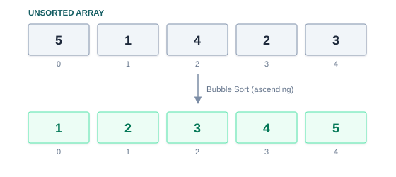
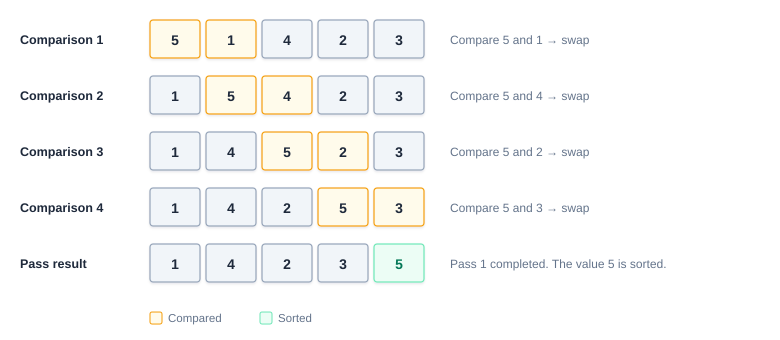
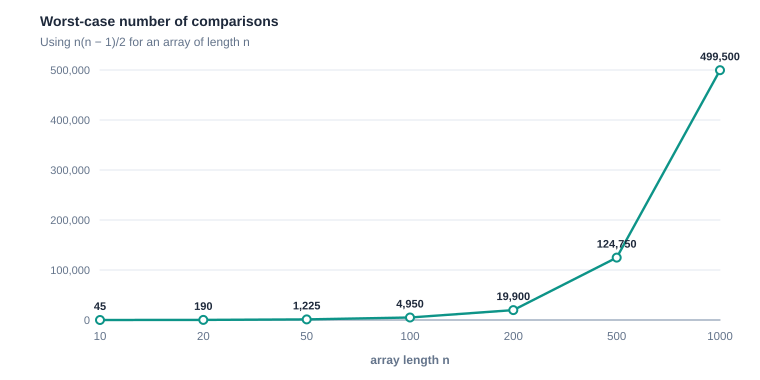

Bubble Sort is one of the simplest comparison-based sorting algorithms. It sorts an array by repeatedly comparing adjacent elements and swapping them when they are in the wrong order.
It is easy to understand and implement, making it useful for learning sorting algorithms, nested loops, time complexity, and algorithm optimization.
Bubble Sort repeatedly traverses an array, comparing two neighboring elements at a time.
For ascending order:
Consider:

The algorithm modifies the original array in place.
The name Bubble Sort comes from the way large values move toward the end of the array during successive comparisons, similar to bubbles rising to the surface.
Explore how Bubble Sort performs individual comparisons, swaps adjacent elements, and completes each pass.
The most important observation is that after each pass, at least one more element has reached its final sorted position.
Let's sort the following array in ascending order:
[5, 1, 4, 2, 3]Pass 1: Move the largest element to the end

After Pass 1:
[1, 4, 2, 3 | 5]
SortedThe largest element, 5, has reached index 4. There is no reason to compare it again.
Pass 2: Move the next-largest element into position
The next pass only processes the first four elements.
| Comparison | Action | Array |
|---|---|---|
| 1 vs 4 | No swap | [1,4,2,3,5] |
| 4 vs 2 | Swap | [1,2,4,3,5] |
| 4 vs 3 | Swap | [1,2,3,4,5] |
After Pass 2:
[1, 2, 3 | 4, 5]
SortedThe two largest elements are now in their correct positions.
Pass 3: Check whether the array is sorted
We compare only the remaining unsorted portion.
[1, 2, 3, 4, 5]
Compare 1 and 2 → No swap
Compare 2 and 3 → No swapThere were zero swaps during Pass 3.
Therefore, the array is already sorted, and we can terminate early.
Summary of our example
| Pass 1 | [1, 4, 2, 3, 5] | 4 swaps |
| Pass 2 | [1, 2, 3, 4, 5] | 2 swaps |
| Pass 3 | No change | 0 swaps |
Pseudocode
BUBBLE_SORT(A, n):
for i = 0 to n - 2:
swapped = false
for j = 0 to n - i - 2:
if A[j] > A[j + 1]:
swap(A[j], A[j + 1])
swapped = true
if swapped == false:
breakThere are two loops:
i): Counts how many passes we have performed.j): Compares adjacent elements in the unsorted region.The key boundary is:
j < n - i - 1Here, n is the array length, i is the current pass index, and j is the comparison index.
Why subtract i? Because the last i elements are already sorted.
Why subtract 1? Because we access arr[j + 1], which must remain within the array.
Basic Bubble Sort
This version uses no early-exit optimization.
public void bubbleSort(int[] arr) {
int n = arr.length;
for (int i = 0; i < n - 1; i++)
for (int j = 0; j < n - i - 1; j++)
if (arr[j] > arr[j + 1]) {
int temp = arr[j];
arr[j] = arr[j + 1];
arr[j + 1] = temp;
}
}
public void main() {
int[] arr = {5, 1, 4, 2, 3};
bubbleSort(arr);
Console.draw("{arr}");
}Output:
[1, 2, 3, 4, 5]This works correctly, but it continues executing passes even when the array has become sorted.
Optimized Bubble Sort (recommended version)
We introduce a boolean variable swapped.
public void bubbleSort(int[] arr) {
int n = arr.length;
for (int i = 0; i < n - 1; i++) {
boolean swapped = false;
for (int j = 0; j < n - i - 1; j++)
if (arr[j] > arr[j + 1]) {
int temp = arr[j];
arr[j] = arr[j + 1];
arr[j + 1] = temp;
swapped = true;
}
// No swaps means the entire array is sorted.
if (!swapped)
break;
}
}
public void main() {
int[] arr = {5, 1, 4, 2, 3};
bubbleSort(arr);
Console.draw("{arr}");
}This version contains two important optimizations:
Optimization 1 — Shrink the comparison range. After every pass, one more element at the end is known to be sorted.
Optimization 2 — Stop when there are no swaps. If an entire pass makes no swaps, all adjacent elements are in nondecreasing order and the array is sorted.
| Best case | O(n) | Already sorted (optimized) |
| Average case | O(n²) | Randomly arranged |
| Worst case | O(n²) | Reverse sorted |
| Auxiliary space | O(1) | Constant extra variables |
Best case: O(n)
Consider an already sorted array:
[1, 2, 3, 4, 5]During the first pass:
1 < 2 → No swap
2 < 3 → No swap
3 < 4 → No swap
4 < 5 → No swapThe swapped variable remains false.
The algorithm exits after performing n - 1 comparisons.
Therefore:
T(n)=\Theta(n)
This best-case complexity applies only when early termination is implemented. Without it, basic Bubble Sort always performs a quadratic number of comparisons.
Worst case: O(n²)
Consider a reverse-sorted array:
[5, 4, 3, 2, 1]Every pair of elements is initially inverted relative to the final order.
The algorithm performs:
| Pass | Comparisons |
|---|---|
| 1 | 4 |
| 2 | 3 |
| 3 | 2 |
| 4 | 1 |
| Total | 10 |
For an array of size n, the maximum comparison count is:
C(n)=(n-1)+(n-2)+\cdots+1
Using the arithmetic series formula:
\boxed{C(n)=\frac{n(n-1)}{2}}
Expanding:
C(n)=\frac{n^2-n}{2}
The dominant term is n^2, so:
\boxed{T(n)=\Theta(n^2)}
How comparisons grow with input size

For example, increasing the array size from 100 to 1,000 increases worst-case comparisons from 4,950 to 499,500 — approximately 101 times as many comparisons.
Average case: O(n²)
For a uniformly random permutation of distinct elements, Bubble Sort also takes quadratic time on average.
The expected number of swaps is:
E[\text{swaps}]=\frac{n(n-1)}{4}
This follows from the expected number of inversions in a random permutation.
A sorting algorithm is stable if elements with equal sorting keys retain their original relative order.
Consider sorting employees by salary:
Input:
(A, 50000)
(B, 30000)
(C, 50000)
(D, 40000)The employees A and C have the same salary.
After sorting:
(B, 30000)
(D, 40000)
(A, 50000)
(C, 50000)Notice that A still appears before C.
Bubble Sort is stable because it swaps only when:
arr[j] > arr[j + 1]If two elements have equal keys, there is no swap.
If you change the condition to:
arr[j] >= arr[j + 1]equal elements may be swapped, and the algorithm is no longer guaranteed to be stable.
We can implement Bubble Sort for any object type using Comparator.
public <T> void bubbleSort(T[] arr, Comparator<? super T> comparator) {
for (int i = 0; i < arr.length - 1; i++) {
boolean swapped = false;
for (int j = 0; j < arr.length - i - 1; j++)
if (comparator.compare(arr[j], arr[j + 1]) > 0) {
T temp = arr[j];
arr[j] = arr[j + 1];
arr[j + 1] = temp;
swapped = true;
}
if (!swapped)
break;
}
}
record Employee(String name, int salary) {}
public void main() {
Employee[] employees = {
new Employee("A", 50000),
new Employee("B", 30000),
new Employee("C", 50000),
new Employee("D", 40000)
};
bubbleSort(employees, Comparator.comparingInt(Employee::salary));
Console.draw("{employees}");
}The comparison uses > 0 rather than >= 0 so employees with equal salaries preserve their original order.
We can prove correctness using a loop invariant.
A loop invariant is a condition that remains true after each iteration of a loop.
For Bubble Sort:
After k completed passes, the last k elements are in their correct final sorted positions.
Initialization: Before the first pass, k = 0, so the invariant is trivially true.
Maintenance: During the next pass, each adjacent comparison ensures that the larger of the compared values moves to the right. The maximum element of the remaining unsorted prefix reaches its final position at the end of that prefix. Therefore, the sorted suffix grows by one element.
Termination: After at most n - 1 passes, at most one element remains outside the sorted suffix. It must also be in its correct position. Alternatively, a pass with no swaps proves the entire array is sorted.
This establishes the correctness of Bubble Sort.
| Property | Bubble Sort |
|---|---|
| Algorithm type | Comparison-based |
| Approach | Iterative, adjacent swapping |
| Stable | Yes, with strict comparison |
| In-place | Yes |
| Adaptive | Yes, with early termination |
| Recursive | Not normally |
| Best time | Θ(n), optimized |
| Average time | Θ(n²) |
| Worst time | Θ(n²) |
| Extra space | Θ(1) |
| Maximum passes | n − 1 |
Important observation: Swaps equal inversions
An inversion is a pair of indices i < j for which arr[i] > arr[j].
For example:
[3, 1, 2]The inversions are (3,1) and (3,2), so there are two inversions.
Bubble Sort swaps adjacent elements only when they form an inversion. Each such swap reduces the total inversion count by exactly one.
Therefore:
\boxed{\text{Total swaps}=\text{Initial inversion count}}
This is an important distinction: the number of comparisons depends on the passes executed, while the number of swaps is exactly determined by the initial inversions.
We can optimize the inner loop further.
If the final swap of a pass occurs at index k, everything to the right of k is already sorted relative to the preceding values and need not be processed during subsequent passes.
public void bubbleSort(int[] arr) {
int n = arr.length;
while (n > 1) {
int newN = 0;
for (int i = 1; i < n; i++)
if (arr[i - 1] > arr[i]) {
int temp = arr[i - 1];
arr[i - 1] = arr[i];
arr[i] = temp;
newN = i;
}
n = newN;
}
}Here, newN records the boundary immediately after the final swap.
If no swaps happen, newN remains zero, and the loop terminates.
This optimization can reduce unnecessary comparisons on certain partially sorted arrays, although worst-case time complexity remains O(n²).
| Algorithm | Best | Average | Worst | Stable |
|---|---|---|---|---|
| Bubble Sort (optimized) | O(n) | O(n²) | O(n²) | Yes |
| Selection Sort | O(n²) | O(n²) | O(n²) | No, generally |
| Insertion Sort | O(n) | O(n²) | O(n²) | Yes |
| Merge Sort | O(n log n) | O(n log n) | O(n log n) | Yes |
| Quick Sort | O(n log n) | O(n log n) | O(n²) | No, generally |
| Heap Sort | O(n log n) | O(n log n) | O(n log n) | No |
For practical Java applications, Bubble Sort is rarely preferred for large arrays. Arrays.sort() and List.sort() provide much more efficient general-purpose sorting implementations.
Advantages
Disadvantages
Incorrect inner-loop boundary
// Incorrect: arr[j + 1] may exceed the array length.
for (int j = 0; j < n - i; j++)Correct:
for (int j = 0; j < n - i - 1; j++)Forgetting to reset swapped
for (int i = 0; i < n - 1; i++) {
boolean swapped = false; // Must reset each pass
// ...
}Using the wrong comparison for ascending order
arr[j] > arr[j + 1] // Ascending
arr[j] < arr[j + 1] // DescendingThinking Bubble Sort always requires n − 1 passes
That is the maximum number of passes in the standard algorithm. An optimized implementation can stop earlier when no swaps occur.
Bubble Sort is particularly useful for understanding how sorting works, practicing nested-loop logic, explaining stability and in-place sorting, and studying best-case versus worst-case complexity.
For real applications, particularly with large collections, an efficient library sorting algorithm is usually a better choice.
Bubble Sort works by repeatedly comparing and swapping adjacent elements. Each pass moves the largest remaining value into its correct position.
Its main characteristics are O(n²) average/worst-case time, O(1) auxiliary space, stability, and O(n) best-case time with early termination.
The algorithm is important not because it is the fastest sorting method, but because it clearly demonstrates comparisons, swaps, loop invariants, early termination, and algorithmic complexity.